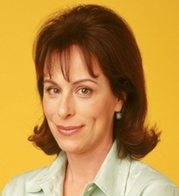

Curriculum Vitae

Jane Kaczmarek
Resumen
Actriz estadounidense. Es conocida por su papel de Lois en la serie
"Malcolm in the Middle". Ha sido nominada tres veces el premio Globo de
Oro, así como siete veces a los Premios Emmy. Tras el final de Malcolm in
the Middle, se convirtió en la estrella de la serie "Help Me, Help You"
coprotagonizada con Ted Danson; "Raising the Bar", en la cual interpretaba
a la jueza Trudy Kessler. También hizo la voz de la jueza Constance Harm
en varios capítulos de Los Simpson.
Datos Personales
- Nombre completo: Jane Frances Kaczmarek
- Fecha de nacimineto: 21 de diciembre de 1955
- Pais de nacimiento: Estados Unidos
- Actual residencia: San Marino, California.
-
Ocupación: Actriz de televisión, actriz de cine, actriz de teatro,
actriz de voz
Educación
- Universidad de Wisconsin-Madison
- Escuela de arte dramático de Yale
Antecedentes Porfesionales
- La enfermera Sandy Burns en St. Elsewhere (1982)
- Connie Lehman en The Paper Chase: The Second Year (1983–1984)
-
Emily Barnes, novia de Bobby Fontanna (Lewis Smith) en la película
Heavenly Kid (1987)
-
Carol Anderson, madre biológica de Julie Emrick en Felicity, en 5
episodios (1999–2000)
-
Carol Anderson, madre biológica de Julie Emrick en Felicity, en 5
episodios (1999–2000)
-
Lois, madre de Malcolm, Reese, Francis, Dewey y el bebé Jamie. 151
episodios de Malcolm in the Middle desde 2000 hasta 2006
-
Trudy Kessler, Juez de Corte en 25 episodios de Raising the Bar desde
2008 hasta 2009
-
La voz de la Jueza Constance Harm en 8 episodios en The Simpsons entre
2001 y 2010
Fuente: